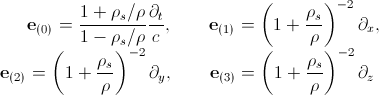
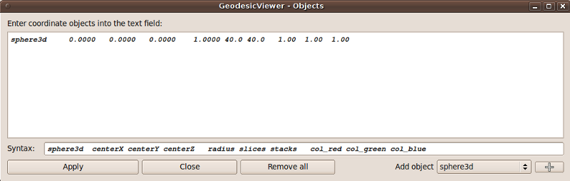

When starting the GeodesicViewer, the initial
The first step is to choose the space-time metric of interest. At the beginning, there is no space-time defined. This is indicated by the name 'unknown' in the
When choosing a space-time metric, the GeodesicViewer shows a light-like geodesic with a predefined initial position and initial direction. The initial position is given in the
The local reference frame is given by the default natural local tetrad of the space-time. In the case of the Schwarzschild metric in isotropic coordinates, the natural local tetrad reads

Hence, the orientation of the local reference frame coincides with the coordinate axes of the OpenGL 3D view. The initial four-vector of a null geodesic is then defined by the two initial angles ξ and χ:
One of the strengths of the GeodesicViewer is its interactivity. To obtain an impression of the space-time geometry, it is crucial to study the behaviour of null geodesics. So, play around with the initial direction ξ in the
In the bottom right corner you can read that the maximum number of points has been exceeded. That is because the geodesic integrator is initially limited to 3000 points. You can change this value in the
A useful feature of the GeodesicViewer is to place objects into the scenary for a better orientation. Here, we will indicate the horizon of the Schwarzschild black hole by a sphere. For that, click on the
To add a sphere into the scenary, choose 'sphere3d' in the 'Add object' combo box and press the '+' button. The 'text field' now looks like this:
The meaning of the different values is given in the 'Syntax' line. After the object name, here 'sphere3d', the Cartesian coordinates of the center of the sphere and the radius have to be defined. Because the sphere is represented by a mesh, the number of 'slices' and 'stacks' must be given. The last three values determine the colour of the sphere in rgb format, where 0 ≤ r,g,b ≤ 1. Because the event horizon has size rs=2 and we would like to have a red sphere, modify the line as follows:
and press 'Apply'. In the 'OpenGL 3D' view, a red sphere appears.
Beside the sphere, let us also add a box into the scenary. For that, select 'box3d' in the 'Add object' combo box and press the '+' button. Then, change the parameters as follows:
and press 'Apply'. When you are finished adding objects, press the 'Close' button. Your
The projection of the three-dimensional scenary in the
For a simple mouse navigation, select 'rotate on sphere' in the 'mouse' combo box in the
To save the current parameters and settings, click on the
First, choose the directory where the files configuration files shall be stored. If you press on the '...' button, a directory dialog pops-up where you can choose the directory as usual. Next, enter a base-filename for the configuration files in the 'Name' line. (Details about the checkboxes can be found here). At last, press the 'Write' button. The resulting files can be seen here:
If you like to reload all parameters and settings, click on the